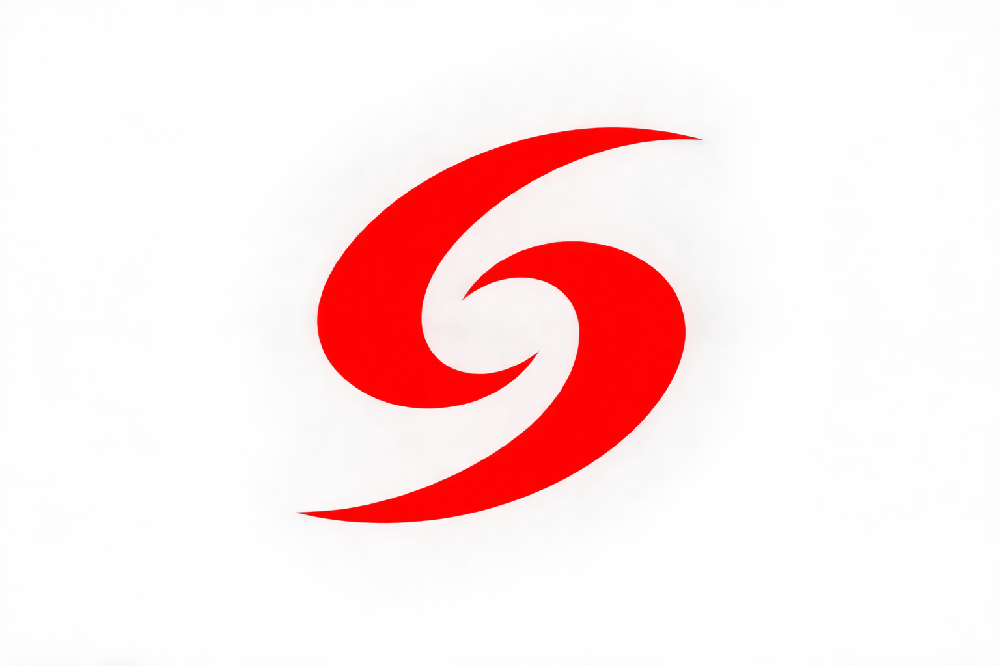

Storm Simulator
Storm OS · Симулятор дисплея · 240 × 240

Storm OS--:--:--
·Погода загружается
Экран ещё не подключён
Загружаем питомца…
Источник погоды: Open-Meteo; геокодирование GeoNames.
Успешных проверок ещё нет.
Автономное превью часов.
Уведомления Codex доступны в превью выбранного устройства после входа в панель.
Экран Tamagotchi доступен в превью выбранного устройства после входа и создания питомца.
Индикатор показывает доступность API, а не питание ноутбука.
Часы используют время и часовой пояс браузера.
Как проверить потерю связи
Остановите backend через Ctrl+C, оставив вкладку открытой. После трёх неудачных проверок индикатор станет красным. Запустите backend снова: страница восстановит связь автоматически.